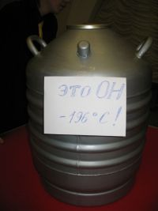
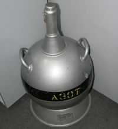
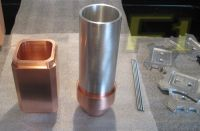
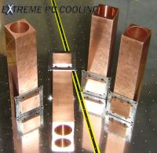
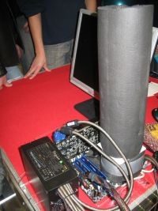
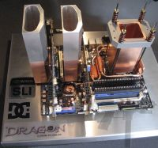
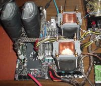

Системы экстремального охлаждения
Ну и в завершающей главе моей сегодняшней статьи станут системы, в качестве хладагента в которых используется жидкий азот.
Жидкий азот представляет собой прозрачную жидкость, без цвета и запаха, температурой кипения (при нормальном атмосферном давлении) которой равна ни много ни мало -195.8 градусов по Цельсию! Для хранения жидкого азота применяют специальные резервуары - сосуды Дьюара объемом от 6 до 40 литров. Тут вот Word подсказывает, что 40 литров это еще и 70.39 английских пинтов, 84.52 американских, 10.56 галлонов или 42.46 квартов ;).
 ../images Установки данного типа предназначены только для экстремального охлаждения, в экстремальных условиях. Одним словом, при разгоне.
Всем по стакану
Системы с жидким азотом не содержат никаких помп (температура, знаете ли, не располагает ;) или других подвижных элементов. Она представляет из себя высокий металлический (медный или алюминиевый) стакан с дном, который плотно соединяется с центральным процессором. Достать такую штуковину не так-то просто (хотя что в наше время не купишь?) – поэтому умельцы зачастую делают его самостоятельно.
 Основной проблемой при разработке стакана является обеспечение процессора при полной нагрузке минимальной температурой. Ведь теплопроводные свойства жидкого азота сильно отличаются от той же воды. Он берет лишь тем, что «промораживает» стенки стакана, позволяя охладить процессор до температуры ниже 100 градусов. А так как тепловыделение камешка в простое и в режиме полной нагрузки отличается достаточно существенно (а скачки происходят мгновенно) - стакан часто не в состоянии вовремя эффективно отвести тепло. Для современного процессора оптимальной температурой является -110-130 градусов. Да, подойдет не любой термоинтерфейс. DeDaL советует AS ceramique. После изготовления стакана, его (и материнскую плату) нужно тщательно теплоизолировать, чтобы конденсат, который неминуемо образуется от такого перепада температур, не замкнул какие-нибудь контакты на материнской плате. Обычно используют различные пористые и пенистые материалы, например вспененный каучук – неопрен. В несколько слоев обматывают отрезанным куском, после чего закрепляют тем же скотчем.
  С изоляцией материнской платы несколько сложнее. Чаще всего поступают так – заклеивая разъемы, все «заливают» диэлектрическим лаком. Причем, с обратной стороны материнской платы такую процедуру тоже нужно проделать – в районе процессорного сокета. Такая лакировка абсолютно не мешает работе платы (хотя, вы автоматически лишаетесь гарантии – так, на всякий случай, если еще не лишились) – но зато вы почти гарантированно исключаете возможность пострадать от протекания жидкого азота.